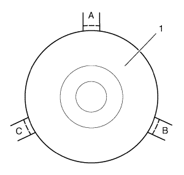
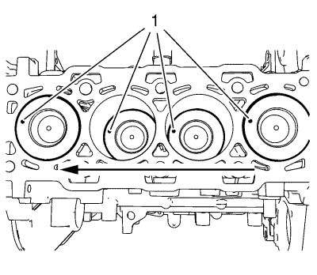
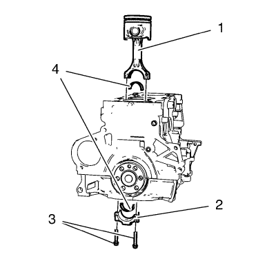

Montaje de pistón, biela y cojinete
Herramientas especiales
| • | EN-45059 Kit de goniómetro de par de apriete |
| • | EN-48249 Compresor de segmentos de pistón |
Si desea informarse sobre herramientas regionales equivalentes, consultar Herramientas especiales .

- Gire los segmentos de pistón antes de montarlos en una posición (A, B, C) tal y como se indica en el gráfico.

- Las marcas (1) de la culata deben señalar al lado de la distribución.

- Lubrique los segmentos de pistón, el pistón (2), la superficie del diámetro interior del cilindro y el compresor EN-48249 (1) con aceite de motor limpio.

- Monte los 4 pistones con 4 bielas (1) y empújelos hacia el bloque del motor.
- Monte los cojinetes de la biela (4) en los sombreretes de la biela (2).
Nota: Asegúrese de que no se rayen o dañen los cojinetes de biela.
- Monte los 8 cojinetes de biela (4).
Precaución:Consulte Precaución con las fijaciones en la sección Prólogo.
- Monte los 8 tornillos del sombrerete de cojinete de biela (3) y apriételos en dos pasos:
| 7.1. | En el primer paso, apriételos a 25 N·m (19 lib. pie). |
| 7.2. | En el segundo paso apriételos a 90° con el goniómetro EN-45059. |
| © Copyright Chevrolet. All rights reserved |